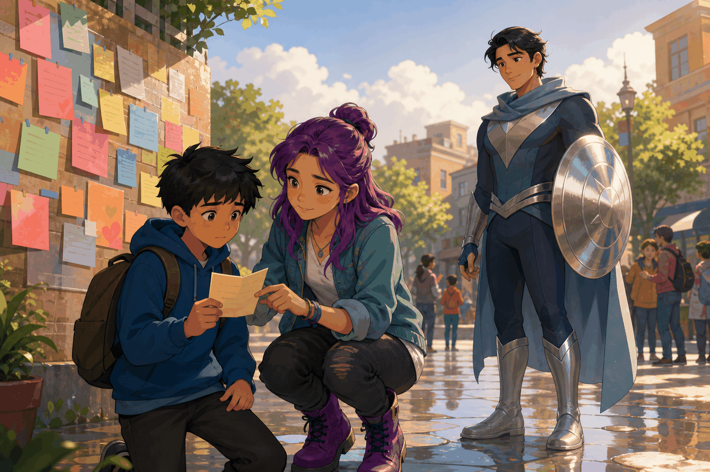
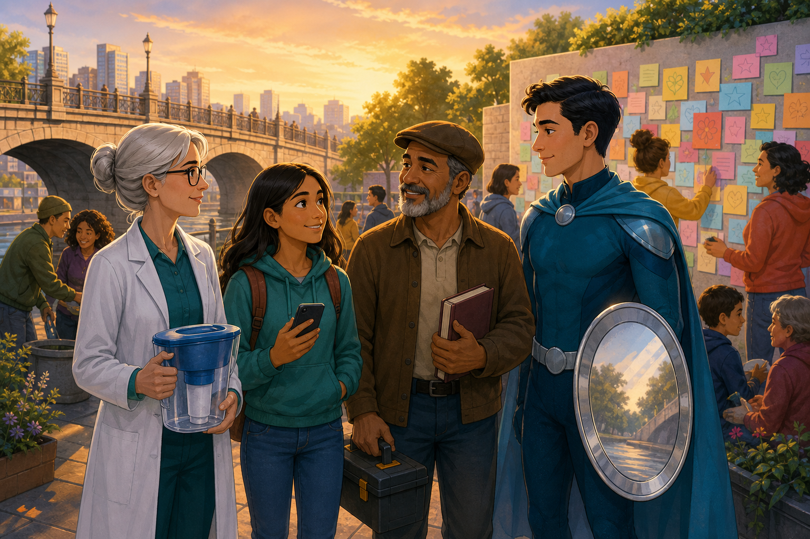

Read a narrative continuation, identify character motivation, understand
implied meaning, and explain how evidence can change first impressions.
01
Reading Strategy
Before You Read
This story happens after the bridge emergency. Read for three things: what
people write, what they believe at first, and what they learn after listening.
1
First impressions
Notice how people describe others before they know the full story.
2
Evidence
Look for actions that prove the characters are more complex than labels.
3
Message
Think about why names and personal stories matter in the community.
02
Story Part Two
The Wall of Names
The next morning, Silver City was quieter. The old bridge was safe, and
people were cleaning the streets. Near the river, someone had started a
public wall with colorful notes. At the top, a sign said: Write one name
and one true story.
Maya wrote first. She wrote about a boy named Nico. Some students called
him lazy because he often arrived late. Maya knew the truth: Nico walked
his little sister to school every morning before going to his own class.

Maya helps a younger student read one note carefully before judging the person in it.
Dr. Lina Frost added another note. She wrote about Mrs. Keene, a woman who
seemed rude at the market. Lina explained that Mrs. Keene had hearing
problems, so she sometimes answered slowly or loudly. Mr. Bruno wrote about
a bus driver who looked angry but always waited for elderly passengers.
The Mirror Guardian watched silently. His shield did not shine this time.
He did not need magic. People were doing the difficult work themselves:
asking questions, listening, and changing their opinions.
Then Nico arrived and read his name on the wall. His face turned red, but
he smiled. "I thought nobody noticed," he said. Maya answered, "We notice
now." By sunset, the wall was full. Silver City still had rumors, but it
also had something stronger: real stories with real names.

The community learns that a real story can be stronger than a quick label.
03
Reading Check
Answer the Questions
Story connection
Return to the listening story
Compare how the first story uses the hero's shield and how this second part
uses community voices to challenge stereotypes.